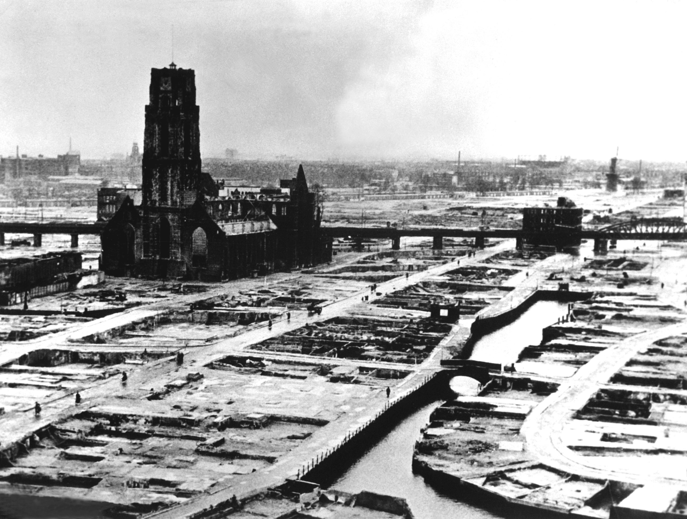

Operatie Weserubung
In april 1940 viel Duitsland Denemarken en Noorwegen binnen om transporten van ijzererts uit Zweden, die de geallieerden probeerden af te snijden, te beschermen. Denemarken capituleerde na een paar uur en Noorwegen werd ondanks de steun van de geallieerden binnen twee maanden veroverd. De Britse onvrede over de Noorse campagne leidde op 10 mei 1940 tot de benoeming van Winston Churchill tot premier. Norwary 1940: Operation Weserubung
Fall Gelb
 Op dezelfde dag lanceerde Duitsland een offensief tegen Frankrijk. Om de sterke vestingwerken van de Maginotlinie aan de Frans-Duitse grens te omzeilen, richtte Duitsland zijn aanval op de neutrale naties België, Nederland en Luxemburg. De Duitsers voerden een flankerende manoeuvre uit door de Ardennen, die door de geallieerden werd gezien als een ondoordringbare natuurlijke barrière tegen gepantserde voertuigen. Door met succes nieuwe blitzkrieg-tactieken te implementeren, rukte de Wehrmacht snel op naar het Kanaal en sneed de geallieerde strijdkrachten in België af, waarbij het grootste deel van de geallieerde legers aan de Frans-Belgische grens bij Lille werd gevangen. Het Verenigd Koninkrijk was in staat begin juni een aanzienlijk aantal geallieerde troepen van het continent te evacueren, hoewel ze bijna al hun uitrusting achterlieten. Dunkirk Evacuation (1940)
Slag om Frankrijk
Op 10 juni viel Italië Frankrijk binnen en verklaarde de oorlog aan zowel Frankrijk als het Verenigd Koninkrijk. De Duitsers keerden zich zuidwaarts tegen het verzwakte Franse leger en Parijs viel op 14 juni op hen neer. Acht dagen later tekende Frankrijk een wapenstilstand met Duitsland; het was verdeeld in Duitse en Italiaanse bezettingszones en een onbezette rompstaat onder het Vichy-regime, dat, hoewel officieel neutraal, over het algemeen in overeenstemming was met Duitsland. Frankrijk behield zijn vloot, die het Verenigd Koninkrijk op 3 juli aanviel (Mers-el-Kebir) in een poging de inbeslagname door Duitsland te voorkomen. The Battle of Rotterdam - 1940
De London Blitz
 De luchtslag om Engeland begon begin juli met aanvallen van de Luftwaffe op schepen en havens.
Het Verenigd Koninkrijk verwierp Hitler's ultimatum, en de Duitse luchtoverwichtscampagne begon in augustus, maar slaagde er niet in het RAF Fighter Command te verslaan, waardoor het voor onbepaalde tijd uitstellen van de voorgestelde Duitse invasie van Groot-Brittannië werd afgedwongen.
Het Duitse strategische bombardementsoffensief nam toe met nachtaanvallen op Londen en andere steden in de Blitz, maar slaagde er niet in de Britse oorlogsinspanning significant te verstoren en eindigde grotendeels in mei 1941.
The Blitz (1940-1941)
De luchtslag om Engeland begon begin juli met aanvallen van de Luftwaffe op schepen en havens.
Het Verenigd Koninkrijk verwierp Hitler's ultimatum, en de Duitse luchtoverwichtscampagne begon in augustus, maar slaagde er niet in het RAF Fighter Command te verslaan, waardoor het voor onbepaalde tijd uitstellen van de voorgestelde Duitse invasie van Groot-Brittannië werd afgedwongen.
Het Duitse strategische bombardementsoffensief nam toe met nachtaanvallen op Londen en andere steden in de Blitz, maar slaagde er niet in de Britse oorlogsinspanning significant te verstoren en eindigde grotendeels in mei 1941.
The Blitz (1940-1941)